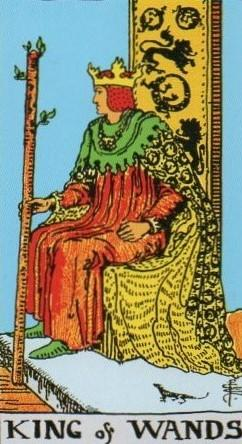
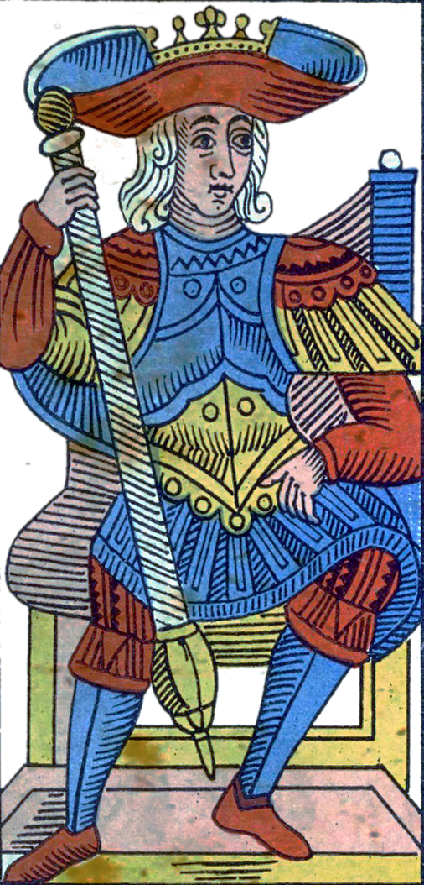
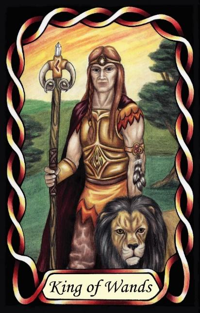

King of Wands
The Mastermind (INTJ – NiTe)



King |
Rational: Abstract Utilitarian |
||
Action |
|||
Introverted iNtuition Extroverted Thinking |
|||
2.1% of population |
|||
Examples: Dwight D Eisenhower, Vladimir Putin |
|||
Meaning of Life: Actualisation. Putting ideas into practice. |
|||
Astrology: Sagittarius (Male side) |
|||
Kings of Wands are visionary, strategic Rationals who operate from a powerful inner sense of direction. Their introverted intuition gives them the ability to see long-range outcomes, underlying patterns, and the future implications of present actions with remarkable clarity. They hold an internal map of how things will unfold, and this vision guides everything they do.
As Rationals in a Fire suit, they are driven to act on their insights. They are not content to merely understand the world — they want to shape it. Their extroverted thinking organises their intuitive impressions into structured plans, systems, and strategies. This combination makes them decisive, purposeful, and highly effective at turning abstract vision into concrete reality.
Kings of Wands influence others through direction rather than persuasion. They lead by providing clarity of purpose, by defining the trajectory, and by setting the standard for disciplined, long-term action. Their leadership is quiet but powerful: they do not need to dominate or command, because their certainty and competence naturally draw others into alignment.
Their focus is on systems rather than individuals. They understand the mechanics of the world — natural, organisational, or political — and they instinctively look for ways to improve, refine, or restructure them. They excel at long-term planning, strategic design, and the creation of frameworks that endure.
At their core, they are driven by actualisation. Their meaning in life is found in realising their internal vision, building structures that reflect their understanding of how things should work, and leaving behind a legacy of order, clarity, and purpose. They are the Masterminds of the Rationals — disciplined, far-seeing, and capable of reshaping entire systems through insight and strategic action.